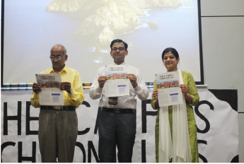
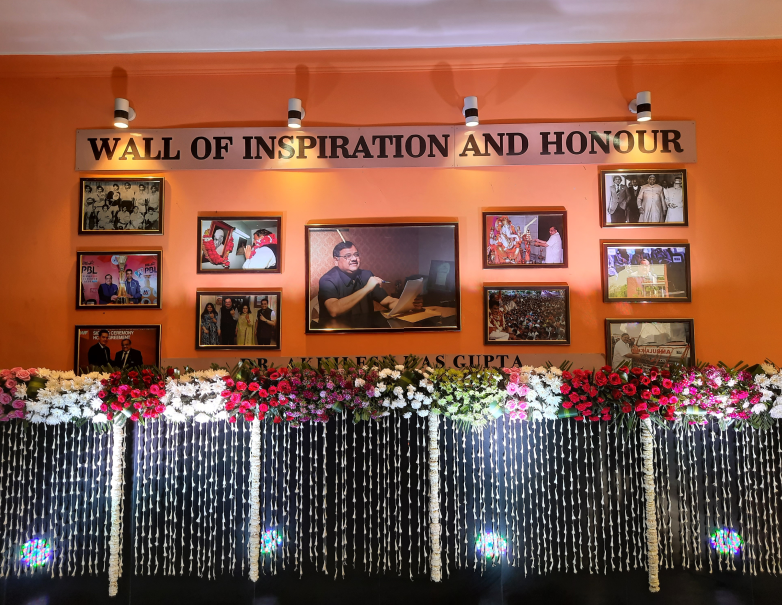

<div class="bg-blue-50">
  <div class="w-[90vw] mx-auto max-w-screen-xl py-10">
    <h1 class="font-bold text-3xl text-center text-blue-900 my-4 mb-7">
      Top Events
    </h1>
    <div class="flex gap-10 max-sm:flex-col py-8 mb-5 items-center">
      <div>
        <h2 class="font-semibold text-xl text-yellow-500 py-2">
          Newsletter Launch Event
        </h2>
        <p class="leading-6 text-gray-600">
          In a grand collaboration with societies like Virsa, Dazzlers,
          Yakshagna, Awaaz, Qaafila, and Confluenz, we proudly launched the
          first edition of The Campus Chronicles. This mega-event was a vibrant
          mix of performances, from dances to stand-up comedy, marking a
          momentous offline gathering at ADGITM.
        </p>
      </div>
      <div class="max-sm:flex max-sm:justify-center align-center">
        <div class="border-[3px] rounded-md border-blue-900 -ml-3">
          
        </div>
      </div>
    </div>
    <div class="flex gap-10 max-sm:flex-col-reverse py-8 items-center">
      <div class="max-sm:flex max-sm:justify-center">
        <div class="border-[3px] rounded-md border-blue-900 -ml-3">
          
        </div>
      </div>
      <div>
        <h2 class="font-semibold text-xl text-yellow-500 py-2">
          Founder's Day Event
        </h2>
        <p class="leading-6 text-gray-600">
          Late Dr. Akhilesh Das Gupta was a man with traits such as an
          educationist , social welfare activist , politician , and
          philanthropist . He served as a Mayor of Lucknow and as a Member of
          Parliament for 18 years . The sportsperson inside his heart
          contributed to uplifting sports and served as the President of the
          Badminton Association of India . With a clear mind and his vision to
          churn out citizens of the world , BBD Educational Group started its
          journey in 1998 . Here we are to celebrate 22 years of the flourishing
          journey . 31 th March is a day to celebrate the Birth Anniversary of
          Dr. Akhilesh Das Gupta Ji .
        </p>
      </div>
    </div>
  </div>
</div>
